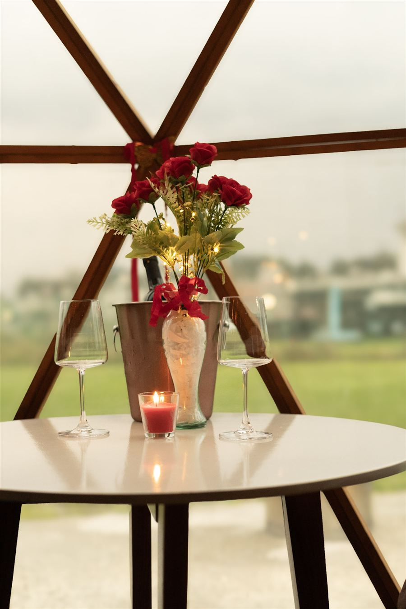
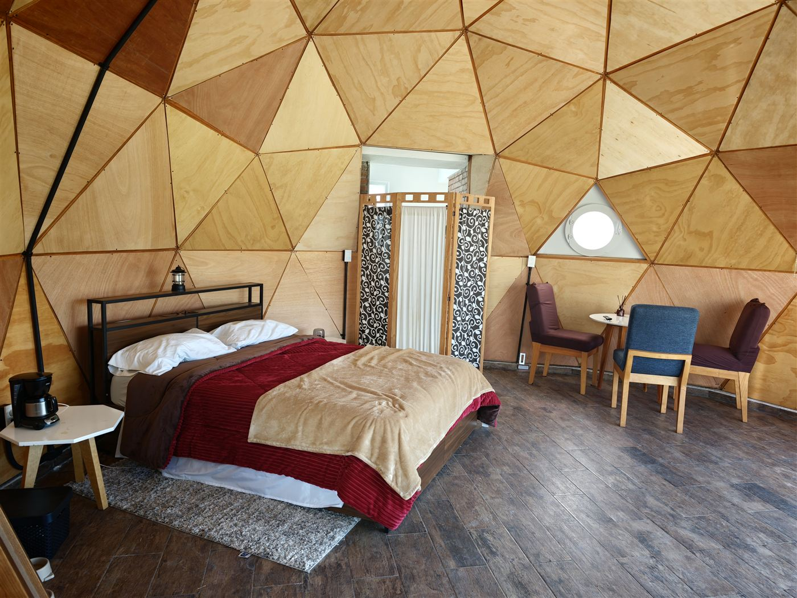
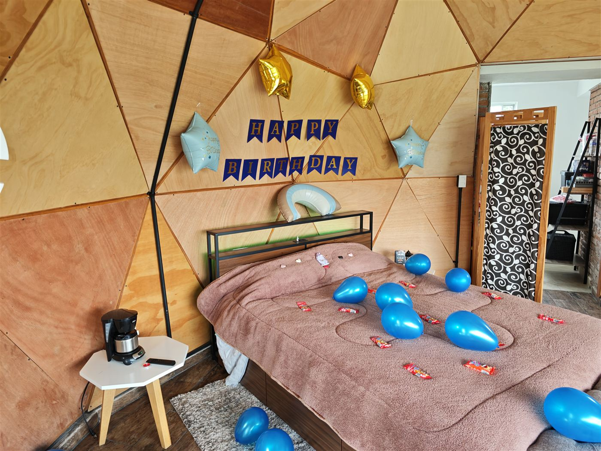
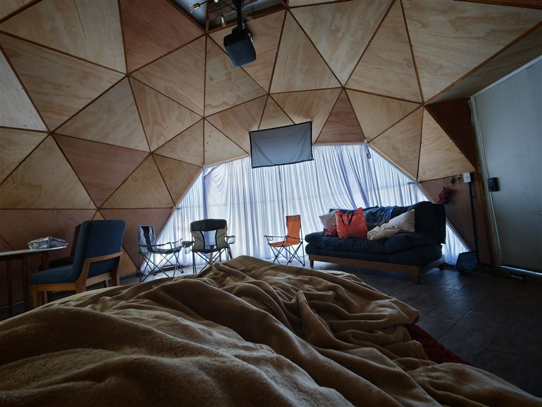
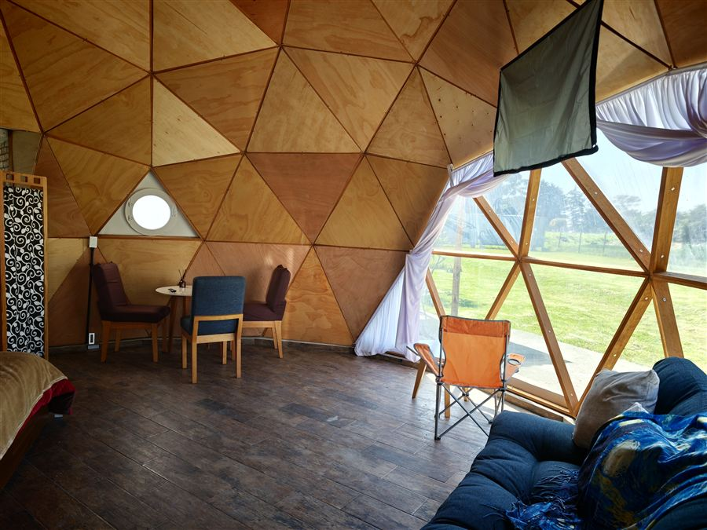
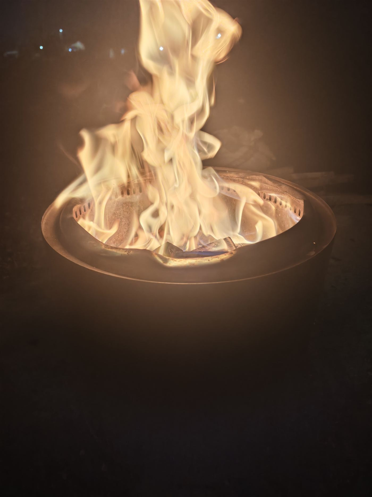
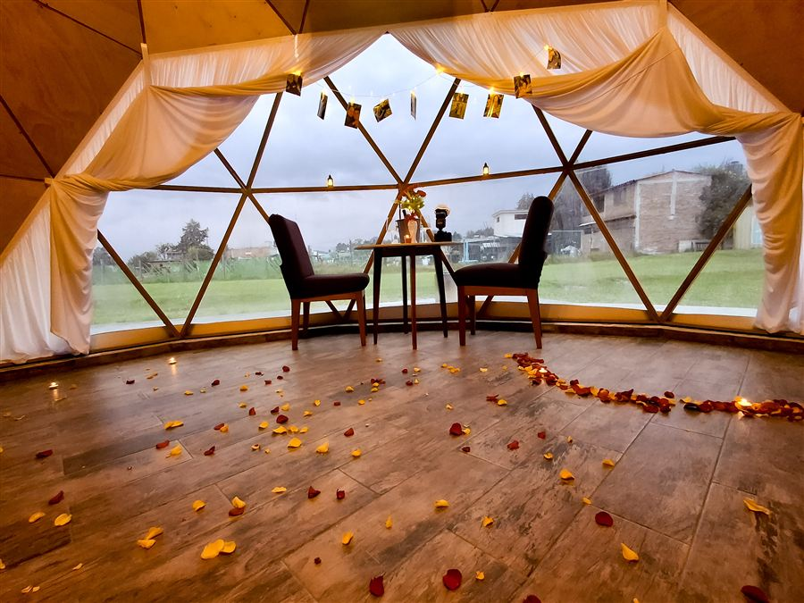

Sesión fotográfica
Pareja, familia, embarazo, mascotas, retrato, producto o contenido. Trae a tu fotógrafo o pregúntanos por fotografía incluida.
El espacio está listo. La experiencia la imaginamos contigo.
Una sorpresa, una cena, una sesión de fotos, una tarde con amigos, un masaje, una celebración… o una idea que todavía no se nos ha ocurrido.
Ojo de Agua no tiene que ser solamente un lugar donde pasar la noche. El domo, el jardín y el entorno pueden convertirse en el escenario de algo especial.
Tú nos cuentas la ocasión, con quién vienes y qué estás imaginando. Nosotros vemos cómo aprovechar el espacio, qué podemos preparar y, cuando haga falta, con quién podemos apoyarnos.
Cada experiencia puede construirse diferente, de acuerdo con lo que quieres vivir, el número de personas y el presupuesto que quieras destinar.

Una de las mejores cosas de hacer algo especial cerca es que no necesitas convertirlo en una operación complicada.
Podemos coordinarnos para que, cuando llegues, lo acordado ya esté preparado. Tú no vienes a montar la sorpresa. Vienes a vivirla.


Un aniversario. Un cumpleaños. Una sorpresa. La pregunta que llevas tiempo queriendo hacer. Una pedida de noviazgo o de matrimonio.
Podemos ayudarte a transformar Ojo de Agua para ese momento con decoración, iluminación, flores, fotografía, alimentos o pequeños detalles.
No necesitas convertirlo en un viaje de fin de semana para que sea memorable.
Tengo una ocasión especialSon ejemplos para abrir la imaginación. Puedes tomar una idea, mezclar varias o llegar con algo completamente diferente.

Pareja, familia, embarazo, mascotas, retrato, producto o contenido. Trae a tu fotógrafo o pregúntanos por fotografía incluida.

Por unas horas el domo puede transformarse en un espacio privado para desconectarte todavía más. Con reservación previa y sujeto a disponibilidad.

Asador, jardín, música y fogata. A tu manera o con apoyo previo para dejar parte de la experiencia preparada.

Una cena para dos, una reunión familiar o algo más producido. Dinos cuántos son, qué quieres hacer y construimos alrededor de eso.
Mejor. Seguramente hay formas de vivir Ojo de Agua que todavía no hemos imaginado. Cuéntanos qué tienes en mente y veamos cómo hacerlo posible.
Hay espacio para una tarde sencilla y también para algo completamente preparado. El presupuesto cambia la escala; no la importancia del momento.
Una tarde. Una carnita asada. Una fogata. Algo de comer y alguien importante. Sin carretera, sin hotel lejano, sin convertirlo en un proyecto de fin de semana.
Decoración, fotografía, catering, amigos esperando y una sorpresa preparada hasta el último detalle. Llegas y el escenario ya existe.

Puedes venir saliendo del trabajo. En coche o en moto. Pasar unas horas aquí y regresar, o decidir que esa noche también forma parte de la escapada.
Eso permite hacer algo espontáneo sin que se sienta improvisado. Y permite que una sorpresa sea posible para mucha más gente.
Este espacio también puede ser tu escenario.
Si eres fotógrafo, decorador, planner, chef, terapeuta, florista, creador de contenido o tienes una idea que necesita un lugar diferente, queremos conocerte.
Puedes traer a tus propios clientes y utilizar Ojo de Agua como locación, o podemos explorar maneras de trabajar juntos.
Quiero crear algo en Ojo de AguaQué quieres hacer, cuándo, para cuántas personas, qué estás imaginando y, si quieres, qué presupuesto tienes en mente.
Vemos qué puede hacerse en el espacio, qué debemos preparar y con quién necesitamos coordinarnos.
Dejamos preparado lo acordado. Tú llegas a disfrutar el momento, no a organizarlo.
Todas las experiencias requieren coordinación previa y están sujetas a disponibilidad.
Y eso está bien. No queremos limitar Ojo de Agua a las cosas que ya hemos hecho. Cuéntanos qué tienes en mente. Nosotros ponemos el espacio y buscamos contigo cómo hacerlo realidad.
Cuéntanos tu idea por WhatsApp